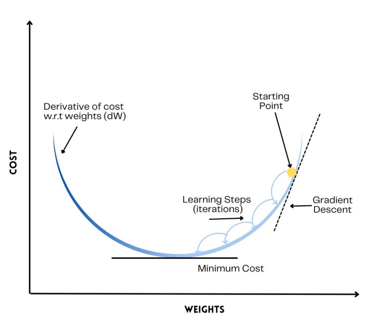
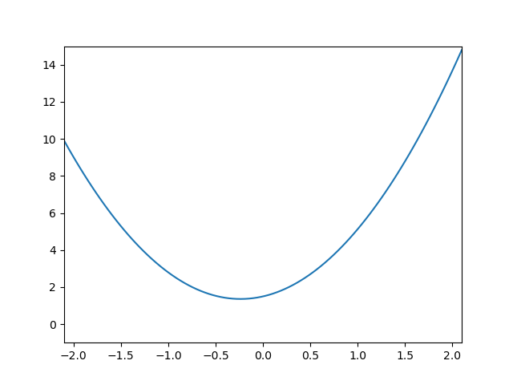
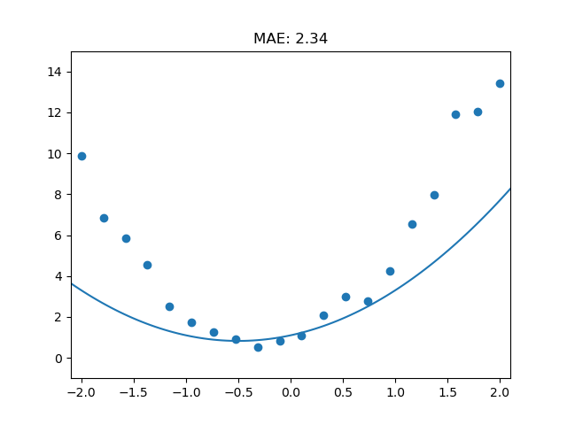
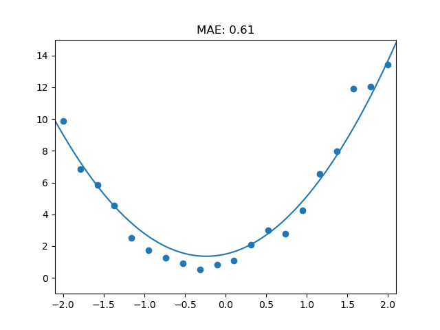

!which python
conda env listimport torchtorch.tensor([1,1,1])import numpy as np
from functools import partial
from ipywidgets import interact
import torch
import matplotlib.pyplot as pltdef quad(a,b,c,x): return a*x**2 + b*x + c
def quad_abc_fn(a,b,c): return partial(quad,a,b,c)# a=3
# b=2
# c=1
@interact(a=3,b=2,c=1)
def plot_quad(a,b,c):
xs_plotting = torch.linspace(-2.1, 2.1, steps=100)
quad_model_fn = quad_abc_fn(a,b,c)
ys_plotting = quad_model_fn(xs_plotting)
plt.ylim((-1,15))
plt.xlim((-2.1,2.1))
plt.plot(xs_plotting, ys_plotting)
# Save the plot as an image
plt.savefig("quad_plot1.png")
# 1. get 20 samples of actual data
quad_321_model = quad_abc_fn(3,2,1)
xs_actual = xs_321_20_inputs_tsr = torch.linspace(-2,2,steps=20)
ys_actual = ys_321_20_actual_tsr = quad_321_model(xs_321_20_inputs_tsr)
np.random.seed(42)
def noise(tsr, scale): return np.random.normal(scale=scale, size=tsr.shape)
def add_noise(tsr,scale,add):
scale_noise = tsr*noise(tsr, scale)
added_noise = noise(tsr, scale)
total_noise = scale_noise + added_noise
tsr_noisify = tsr + total_noise
return tsr_noisify
# 2. add noise to 20 samples of actual data
ys_noisey = ys_321_20_noisey_tsr = add_noise(ys_actual, 0.15, 0.5)# 3. cal mae
def mae_calc(actual, preds): return torch.abs(actual-preds).mean()@interact(a=1.1,b=1.1,c=1.1)
def plot_all(a,b,c):
plot_quad(a,b,c)
plt.scatter(xs_actual,ys_noisey)
ys_preds = quad_abc_fn(a,b,c)(xs_actual)
mae = mae_calc(ys_noisey, ys_preds)
plt.title(label=f"MAE: {mae:.2f}")
# Save the plot as an image
plt.savefig("quad_plot2.png")
def loss_function(params):
model = quad_abc_fn(*params)
ys_preds = model(xs_actual)
return mae_calc(ys_noisey, ys_preds)
loss_function([1.1,1.1,1.1])abc_tsr = torch.tensor([1.1,1.1,1.1])
abc_tsrabc_tsr.requires_grad_()loss = loss_function(abc_tsr)
lossloss.backward()abc_tsr.gradwith torch.no_grad():
abc_tsr -= abc_tsr.grad * 0.01
loss = loss_function(abc_tsr)
print(loss)for i in range(10):
loss = loss_function(abc_tsr)
loss.backward()
with torch.no_grad():
abc_tsr -= 0.01 * abc_tsr.grad
print(loss, abc_tsr, abc_tsr.grad)abc_tsra,b,c = abc_tsr.tolist()
@interact(a=a,b=b,c=c)
def plot_all_after_gradient_descent(a,b,c):
plot_quad(a,b,c)
plt.scatter(xs_actual,ys_noisey)
ys_preds = quad_abc_fn(a,b,c)(xs_actual)
mae = mae_calc(ys_noisey, ys_preds)
plt.title(label=f"MAE: {mae:.2f}")
# Save the plot as an image
plt.savefig("quad_plot3.png")
See mae reduced to 0.94 after gradient descent
import numpy as np
from functools import partial
from ipywidgets import interact
import torch
import matplotlib.pyplot as plt
# ctl shft d - simple interface
# ctl shft f - files
# ctl shft b - kernels
# ctl shft k - delete lineconda env listdef quad_fn(a,b,c,x): return a*x**2 + b*x + c
def quad_model(a,b,c): return partial(quad_fn, a,b,c)
quad_321_model = quad_model(3,2,1)
# 1. create sample xs (inputs)
xs_20inputs_tnsr = torch.linspace(-2,2, steps=20)
# 2. create sample og ys (outputs)
ys_20outputs_tnsr = quad_321_model(xs_20inputs_tnsr)
# 3. create noise
def noise(tsr, scale): return np.random.normal(scale=scale, size=tsr.shape)
def add_scale_noise(tsr,scale,add):
tsr = tsr*(1+noise(tsr, scale))
tsr = tsr + noise(tsr, add)
return tsr
ys_20noisey_tnsr = add_scale_noise(ys_20outputs_tnsr, 0.15, 0.5)ys_20noisey_tnsrtensor([ 7.7756, 5.8827, 5.7155, 4.8781, 3.4138, 1.6932, 1.9979, 1.4042,
0.9028, 1.0271, 1.9754, 1.8039, 3.5549, 3.8706, 4.9721, 7.8123,
8.3284, 12.8774, 11.9713, 14.7696], dtype=torch.float64)
# 4. prediction line
a=1.1
b=1.1
c=1.1
@interact(a=1.1,b=1.1,c=1.1)
def plot_abc_quad(a,b,c):
xs_100inputs_tnsr = torch.linspace(-2.1,2.1, steps=100)
# ys_100outputs_tnsr = quad_321_model(xs_100inputs_tnsr)
quad_abc_model = quad_model(a,b,c)
ys_100outputs_tnsr = quad_abc_model(xs_100inputs_tnsr)
plt.ylim((-1,15))
plt.xlim((-2,2))
plt.plot(xs_100inputs_tnsr, ys_100outputs_tnsr)
# plot_abc_quad(a,b,c)@interact(a=1.1,b=1.1,c=1.1)
def plot_all(a,b,c):
plot_abc_quad(a,b,c)
plt.scatter(xs_20inputs_tnsr,ys_20noisey_tnsr)
# plot_all(a,b,c)# 4. calculate mae
def mae(actual, preds): return torch.abs(actual-preds).mean()
# 5. create loss function - input = params | output mae
def loss_function(params):
quad_abc_model = quad_model(*params)
ys_20outputs_lossfn_tnsr = quad_abc_model(xs_20inputs_tnsr)
return mae(ys_20noisey_tnsr, ys_20outputs_lossfn_tnsr)
loss_function([1.1,1.1,1.1])# 6. get gradients
abc_tsr = torch.tensor([1.1,1.1,1.1])
abc_tsr.requires_grad_()loss_abc = loss_function(abc_tsr)
loss_abc.backward()
abc_tsr.grad# 7. sgd
with torch.no_grad():
abc_tsr -= abc_tsr.grad * 0.01
print(abc_tsr)
loss_abc = loss_function(abc_tsr)
print(loss_abc)# 8. automate
for i in range(10):
# abc_tsr.requires_grad_()
loss_abc = loss_function(abc_tsr)
loss_abc.backward()
with torch.no_grad():
abc_tsr -= abc_tsr.grad * 0.01
print(loss_abc, abc_tsr)def relu_fn(m,b,x):
y = m*x+b
# return np.clip(y,0,None)
return torch.clip(y,0)
def relu_mb_fn(m,b): return partial(relu_fn,m,b)
relu_11_model = relu_mb_fn(1,1)
m=1
b=1
@interact(m=1,b=1)
def plot_relu(m,b):
xs_100inputs_tnsr = torch.linspace(-2.1,2.1, steps=100)
relu_mb_model = relu_mb_fn(m,b)
ys_100relu_tnsr = relu_mb_model(xs_100inputs_tnsr)
# plt.ylim((-1,15))
plt.xlim((-1,4))
plt.plot(xs_100inputs_tnsr, ys_100relu_tnsr)
# plot_relu(m,b) # ys_100outputs_relu11_tsr = relu_mb_fn(xs_100inputs_tnsr)# quad_abc_model = relu_model(a,b,c)
# plt.plot(xs_100inputs_tnsr, ys_100outputs_relu11_tsr)
# plot_relu(1,1)
# ys_100outputs_tnsr = quad_abc_model(xs_100inputs_tnsr)
# plt.ylim((-1,15))
# plt.xlim((-2,2))
# plt.plot(xs_100inputs_tnsr, ys_100outputs_tnsr)import torch.nn.functional as F
def relu_torch_fn(m,b,x):
# y = m*x+b
return F.relu(m*x+b)
# def relu_mb_fn(m,b): return partial(relu_fn,m,b)
def relu_mb_torch_fn(m,b): return partial(relu_torch_fn,m,b)
# relu_mb_torch_fn(1,1)plt.rc('figure', dpi=90)
def plot_function(f, title=None, min=-2.1, max=2.1, color='r', ylim=None):
x = torch.linspace(min,max, 100)[:,None]
if ylim: plt.ylim(ylim)
plt.plot(x, f(x), color)
if title is not None: plt.title(title)
# def relu_plotter(m,b)
# @interact(m=1, b=1)
import torch.nn.functional as F
# 1. single relu fn
def sgl_relu_fn(m,b,x): return F.relu(m*x+b)
# 2. double relu fn
def dbl_relu_fn(m1,b1,m2,b2,x): return sgl_relu_fn(m1,b1,x) + sgl_relu_fn(m2,b2,x)
# 3. partial double fn
def dbl_relu_partial_fn(m1,b1,m2,b2): return partial(dbl_relu_fn,m1,b1,m2,b2)
# 4. partial double model
@interact(m1=1,b1=2,m2=-1,b2=-2)
def dbl_relu_plotter(m1,b1,m2,b2):
# dbl_relu_model = dbl_relu_partial_fn(m1,b1,m2,b2)
# plot_function(dbl_relu_model, ylim=(-1,6))
plot_function(dbl_relu_partial_fn(m1,b1,m2,b2), ylim=(-1,6))
# @interact(m1=-1.5, b1=-1.5, m2=1.5, b2=1.5)
# def plot_double_relu(m1, b1, m2, b2):
# plot_function(partial(double_relu, m1,b1,m2,b2), ylim=(-1,6))
import torch.nn.functional as F
# 1. sgl relu
def relu_1_fn(m,b,x): return F.relu(m*x+b)
# 2. dbl relu
def relu_2_fn(m1,b1,m2,b2,x): return relu_1_fn(m1,b1,x) + relu_1_fn(m2,b2,x)
# 3. tpl relu
def relu_3_fn(m1,b1,m2,b2,m3,b3,x): return relu_1_fn(m1,b1,x) + relu_1_fn(m2,b2,x) + relu_1_fn(m3,b3,x)
# 4. triple_relu_plotter
@interact(m1=1,b1=1,m2=-1,b2=-1,m3=0.5,b3=-0.5)
def triple_relu_plotter(m1,b1,m2,b2,m3,b3):
relu_3_model = partial(relu_3_fn,m1,b1,m2,b2,m3,b3)
plot_function(partial(relu_3_fn,m1,b1,m2,b2,m3,b3),ylim=(-1,4))
# assume some function
# y = fn(m1,b1,m2,b2,m3,b3)
xs_100inputs_tnsr = torch.linspace(-2.1,2.1, steps=100)
def mae(actual,preds): return torch.abs(actual-preds).mean()
def relu_loss_function(params):
relu_3_model = partial(relu_3_fn,*params)
# ys_preds_relu_3_model = relu_3_model(xs_100inputs_tnsr)
ys_20preds_relu_3_model = relu_3_model(xs_20inputs_tnsr)
# ys_20noisey_tnsr
return mae(ys_20noisey_tnsr,ys_20preds_relu_3_model)
loss = relu_loss_function([1,1,-1,-1,0.5,-0.5])
tensor(3.9695, dtype=torch.float64)# torch.manual_seed(442)
np.random.seed(42)
rnd_arr = np.random.random_sample(6)-0.5
rnd_6_tsr = torch.tensor(rnd_arr)
rnd_6_tsr.requires_grad_()
loss = relu_loss_function(rnd_6_tsr)
losstensor(4.6544, dtype=torch.float64, grad_fn=<MeanBackward0>)loss.backward()rnd_6_tsr.gradtensor([-7.4506e-09, -1.0000e+00, -5.0526e-01, -6.0000e-01, 3.9474e-01,
-2.5000e-01], dtype=torch.float64)# 1. decrease by negative of gradient
print(rnd_6_tsr)
with torch.no_grad():
rnd_6_tsr -= rnd_6_tsr.grad*0.01
print(rnd_6_tsr)
loss = relu_loss_function(rnd_6_tsr)
print(loss)
tensor([-0.1255, 0.4507, 0.2320, 0.0987, -0.3440, -0.3440],
dtype=torch.float64, requires_grad=True)
tensor([-0.1255, 0.4607, 0.2370, 0.1047, -0.3479, -0.3415],
dtype=torch.float64, requires_grad=True)
tensor(4.6361, dtype=torch.float64)
for i in range(10):
# abc_tsr.requires_grad_()
loss = relu_loss_function(rnd_6_tsr)
loss.backward()
with torch.no_grad():
rnd_6_tsr -= rnd_6_tsr.grad*0.01
print(rnd_6_tsr)
loss = relu_loss_function(rnd_6_tsr)
print(loss)
for i in range(10):
# abc_tsr.requires_grad_()
loss = relu_loss_function(rnd_6_tsr)
loss.backward()
with torch.no_grad():
rnd_6_tsr -= rnd_6_tsr.grad*0.01
print(rnd_6_tsr)
loss = relu_loss_function(rnd_6_tsr)
print(loss)
tensor([-0.1255, 0.4807, 0.2472, 0.1167, -0.3558, -0.3365],
dtype=torch.float64, requires_grad=True)
tensor(4.5994, dtype=torch.float64)
tensor([-0.1255, 0.5107, 0.2623, 0.1347, -0.3681, -0.3285],
dtype=torch.float64, requires_grad=True)
tensor(4.5431, dtype=torch.float64)
tensor([-0.1255, 0.5507, 0.2825, 0.1587, -0.3849, -0.3175],
dtype=torch.float64, requires_grad=True)
tensor(4.4673, dtype=torch.float64)
tensor([-0.1255, 0.6007, 0.3075, 0.1892, -0.4060, -0.3035],
dtype=torch.float64, requires_grad=True)
tensor(4.3719, dtype=torch.float64)
tensor([-0.1255, 0.6607, 0.3373, 0.2262, -0.4316, -0.2865],
dtype=torch.float64, requires_grad=True)
tensor(4.2556, dtype=torch.float64)
tensor([-0.1255, 0.7307, 0.3719, 0.2697, -0.4620, -0.2660],
dtype=torch.float64, requires_grad=True)
tensor(4.1211, dtype=torch.float64)
tensor([-0.1251, 0.8097, 0.4116, 0.3187, -0.4971, -0.2420],
dtype=torch.float64, requires_grad=True)
tensor(3.9829, dtype=torch.float64)
tensor([-0.1244, 0.8967, 0.4561, 0.3727, -0.5373, -0.2140],
dtype=torch.float64, requires_grad=True)
tensor(3.8331, dtype=torch.float64)
tensor([-0.1232, 0.9917, 0.5055, 0.4317, -0.5826, -0.1820],
dtype=torch.float64, requires_grad=True)
tensor(3.6681, dtype=torch.float64)
tensor([-0.1217, 1.0947, 0.5597, 0.4957, -0.6328, -0.1465],
dtype=torch.float64, requires_grad=True)
tensor(3.5046, dtype=torch.float64)